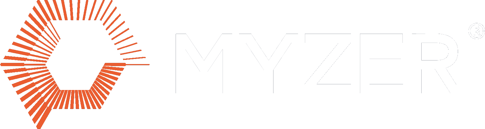
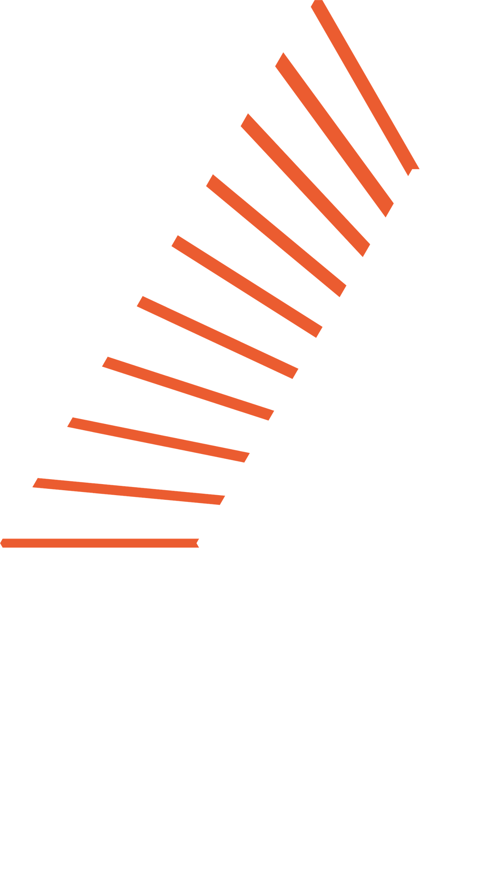
Autorski algorytm 3D LiDAR z dokładnością centymetrową na dystansie 40 m — bez markerów, bez infrastruktury, bez odometrii i bez GPU. Myzer buduje pojazdy — MyFee buduje oprogramowanie.
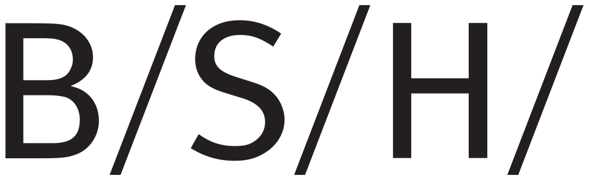
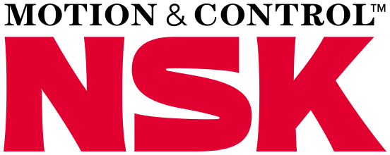
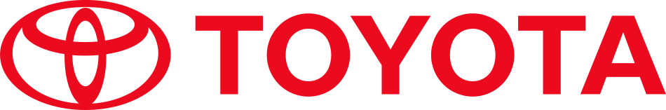
Pitch deck dla inwestorów · Pre-seed / Seed · Artur Myziak, CEO & Co-founder
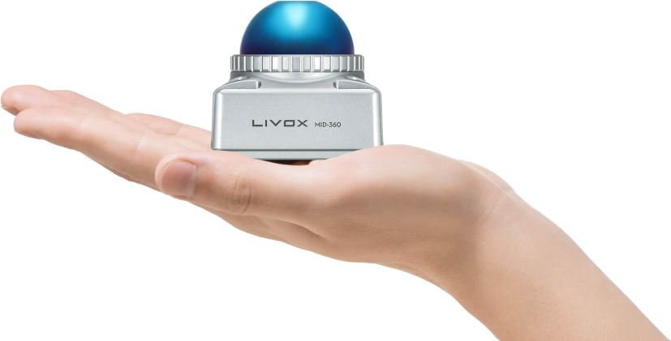
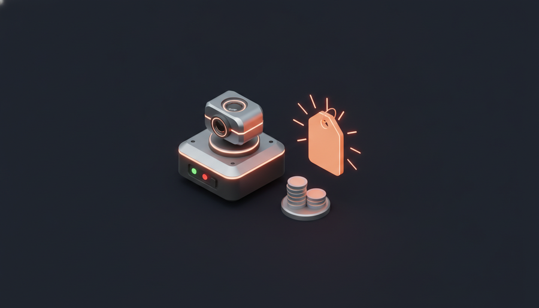
Tradycyjne systemy 2D (LiDAR, enkodery, odometria) wymagają drogich komponentów oraz rozbudowanej infrastruktury informatycznej. Nawigacja 3D na klasycznych liniowych LiDARach jest bardzo kosztowna — koszt pojedynczego skanera >5 000 USD podnosi cenę jednostkową robota i ogranicza masową automatyzację.
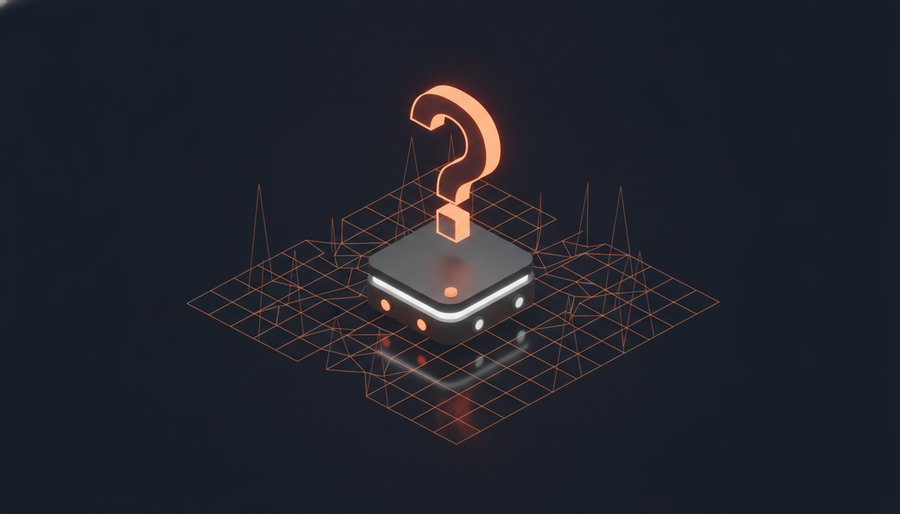
Nawigacja 2D (SLAM) traci orientację przy zmianach układu hali, przesunięciach przeszkód czy regałów → błędy lokalizacji i ręczna relokalizacja. Nawet klasyczne 3D (ICP, FastLIO2) na odometrii i punktach charakterystycznych jest niestabilne, gdy środowisko się zmienia.
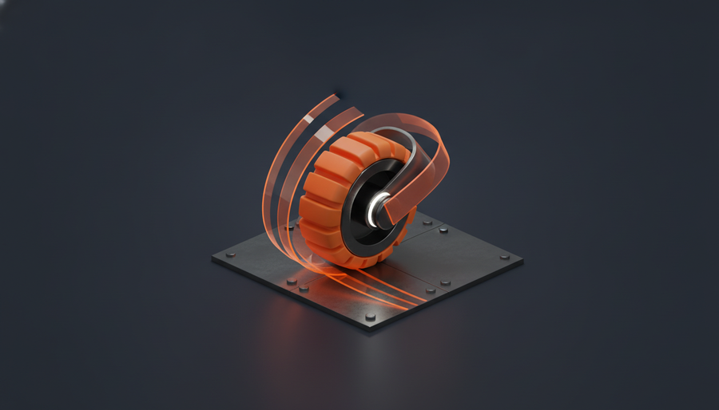
Systemy oparte na enkoderach są podatne na poślizg → błędy pozycji na mapie (dryft) i konieczność interwencji operatora. Roboty poruszają się „na oślep" → rosnące ryzyko kolizji.
Główną barierą wdrożenia AGV jest dziś CENA za jednego robota — stara, droga technologia hamuje rynek.
Nasze rozwiązanie sprawia, że AGV staje się dostępne dla większości małych i średnich fabryk — nie tylko koncernów.
Europejska technologia, która konkuruje z producentami z Azji.
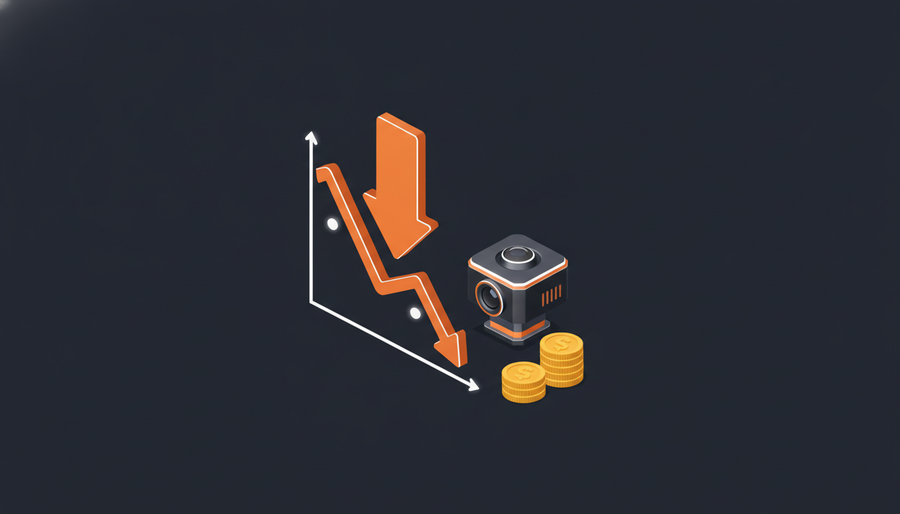
Tani LiDAR (Livox ~659 $) + nasz SLAM bez GPU → pełne 3D w cenie taśmy magnetycznej. To, co jeszcze niedawno było ekonomicznie niemożliwe, dziś jest realne.
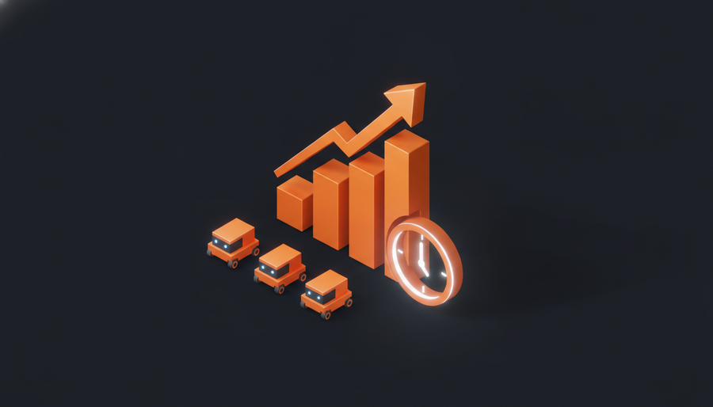
Niedobór rąk w logistyce, reshoring i rosnące płace zmuszają fabryki do automatyzacji. Wdrożenia robotów logistyki rosną +14% r/r (IFR World Robotics 2025).
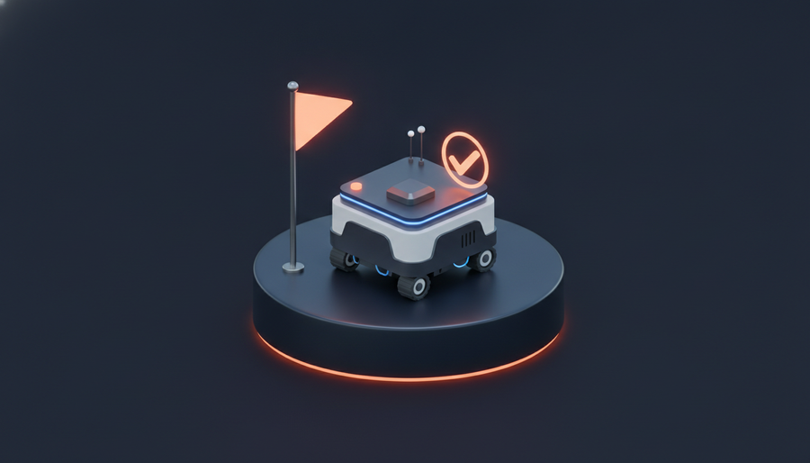
Technologia zwalidowana (EnRicH 2023, wdrożenia BSH i NSK) + kontrakt Toyota. Wchodzimy w okno, zanim rynek się skonsoliduje — giganci już skupują nawigację SLAM (ABB → Sevensense, 2024).
Europejski czarny koń AGV/AMR. Nasza przewaga: lepsza technologicznie, szybsza we wdrożeniu, niezawodna — dzięki 100% własnemu know-how: autorski algorytm 3D LiDAR, własna nawigacja, własne pojazdy. I dostarczamy kompletny proces — nie tylko roboty AGV, ale projektujemy i rozwijamy cały osprzęt do transportu surowca, wyrobu gotowego i ruchu w magazynie.
Autorski algorytm SLAM 3D łączy bezpośrednie dopasowanie skanów LiDAR do mapy (NDT) z modelem ruchu — stabilna lokalizacja bez markerów i bez odometrii, na ekonomicznym sprzęcie bez GPU.
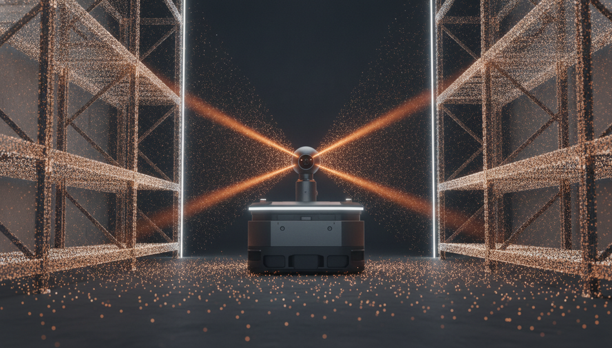
AGV z naszą nawigacją skanuje halę w 3D w czasie rzeczywistym
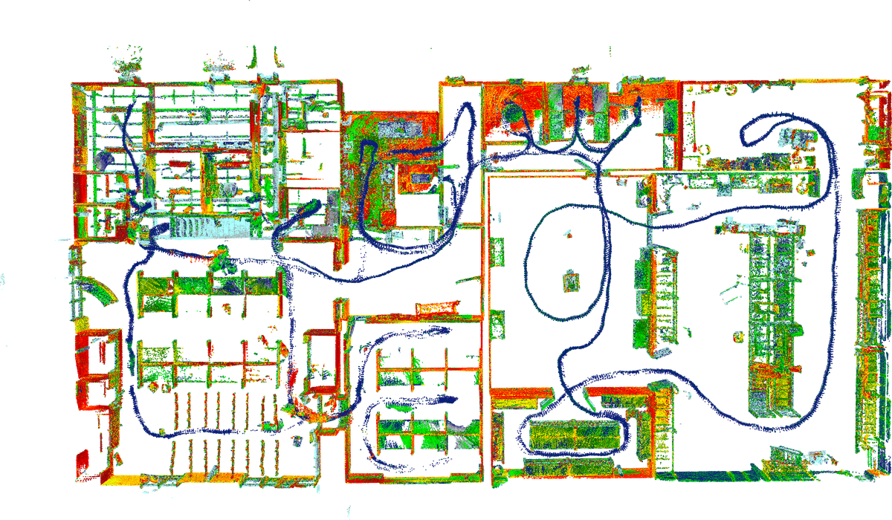
Mapa 3D hali + trasa AGV (niebieska) — zbudowana przez nasz SLAM
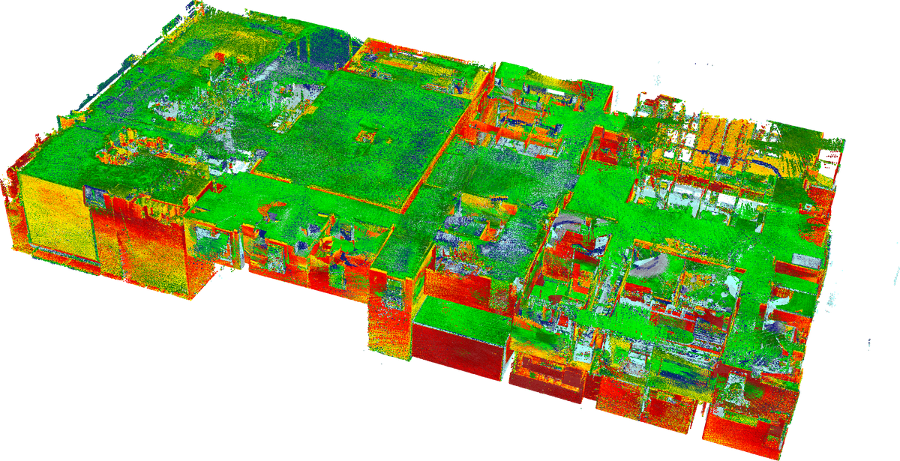
Pełne skanowanie 3D — gęsta chmura punktów otoczenia
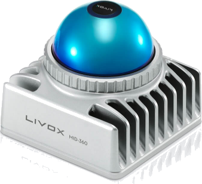
Livox MID-360 — non-repetitive scanning, 99% otoczenia w 1 s
Autorski algorytm Myzer — dopasowanie chmury punktów 3D (NDT) + IMU, pełna lokalizacja bez GPU, bez markerów, bez odometrii.
Gotowy, przetestowany moduł: sensory + jednostka obliczeniowa + nasze oprogramowanie nawigacyjne. Montaż na dowolny pojazd AGV/AMR bez długiej integracji.
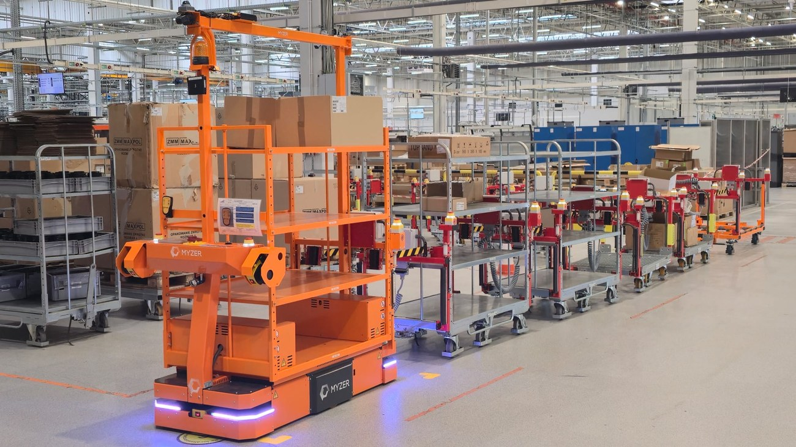
AGV Myzer All-in-One z naszą nawigacją — realna praca na hali (2× Livox + mini-PC bez GPU)
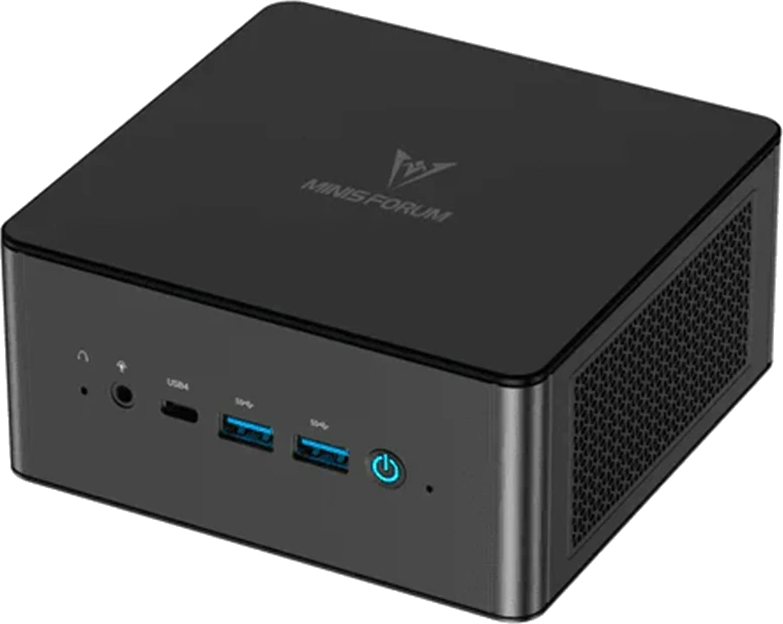
835 €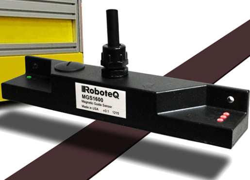
880 € ×2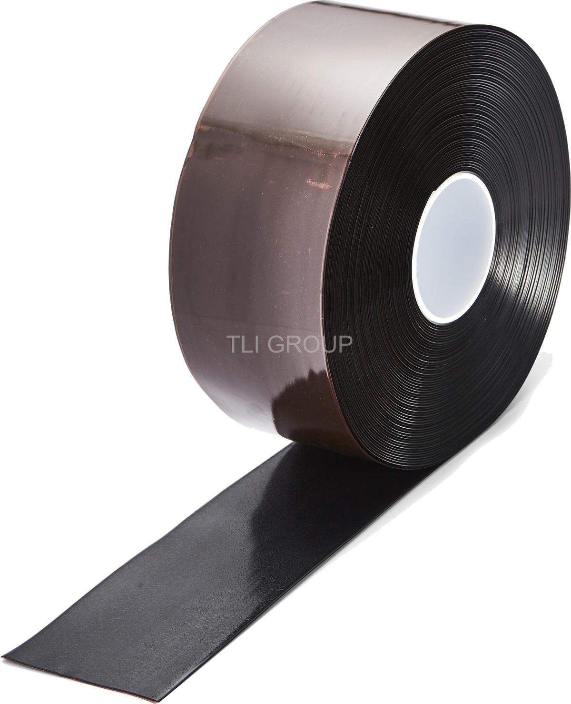
8,20 €/m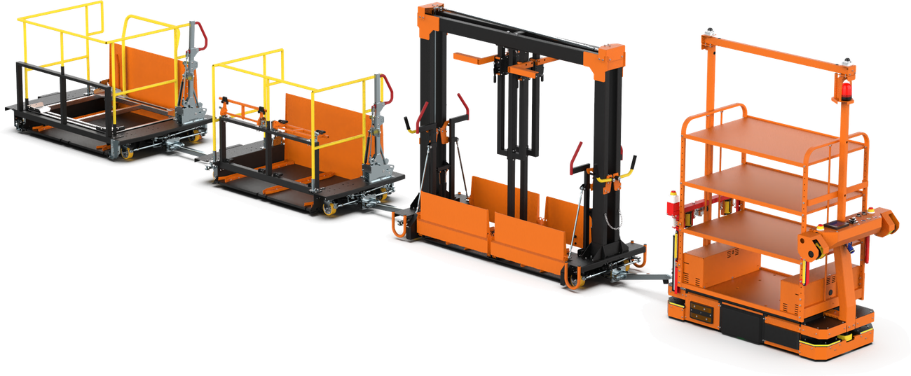
AGV Smart Tug 2000 All-in-One ciągnący zestaw wagonikowy — za ułamek kosztu taśmy
▶ Nasze AGV w realnym ruchu na hali — nie demo laboratoryjne.
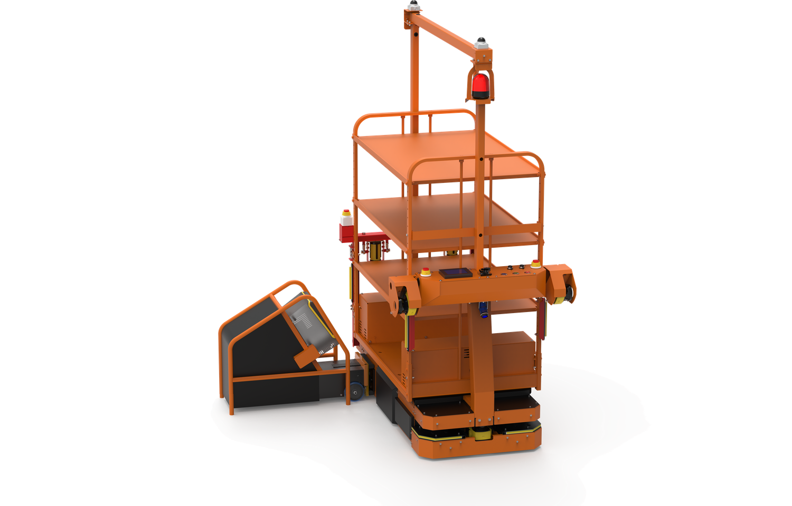
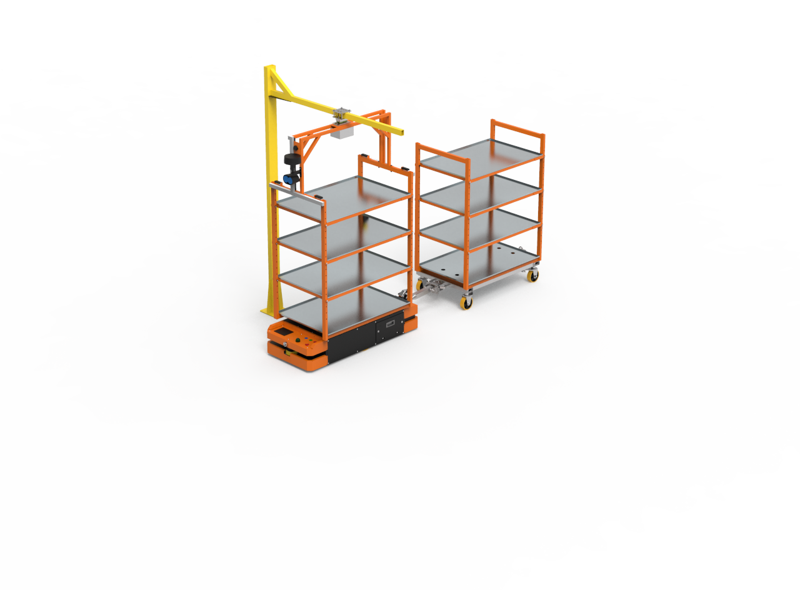
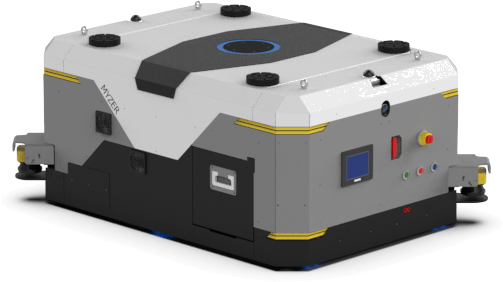
Walidacja: EnRicH 2023 — nagroda za mapowanie 3D (MSAS · Fraunhofer FKIE). Testy lab: 20× misja, błąd <10 cm, dokładność 1–2 cm, do 2 m/s.
Nasza cena rynkowa (Polska): 45–55 tys. € za kompletny AGV — gotowy do pracy, z ładowarką, przygotowany pod proces klienta.
Własna zintegrowana płyta główna (zamiast komponentów przemysłowych) → koszt −7 000 € na robocie → marża jeszcze wyższa.
Zero licencji, zero abonamentu — jeden zakup, kompletny robot gotowy do pracy.
* Cena dotyczy samego AGV — bez kosztów wdrożenia oraz ewentualnego dodatkowego osprzętu (np. wózki, platformy) wymaganego do realizacji kompletnego procesu transportu.
Koszt ~25 tys. € → sprzedaż 50–55 tys. € = marża ×2
| Podejście | Dokładność 3D | Koszt | Środ. dynamiczne | GPU |
|---|---|---|---|---|
| MyFee · NDT+IMU SLAM | cm ✓ | ≈ taśma | Tak ✓ | Nie ✓ |
| Taśma magnetyczna | Brak (2D) | Wysoki (instalacja) | Sztywna | — |
| 2D SLAM | Brak | Średni | Gubi się | — |
| Visual SLAM (np. Sevensense/ABB) | cm ✓ | Wysoki | Tak | Wymaga GPU |
Nasz unikat: pełne 3D + odporność na dynamikę + cena taśmy + zero GPU. Brak GPU to jednocześnie przewaga techniczna i dźwignia kosztu (niższy BOM niż visual-SLAM).
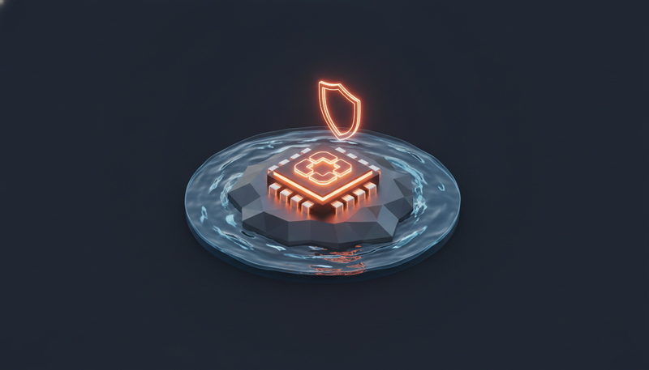
Autorski SLAM 3D działa bez GPU, na jednym rdzeniu CPU. Nie da się go skopiować bez naszej wiedzy — a przy tym jest tańszy w produkcji.
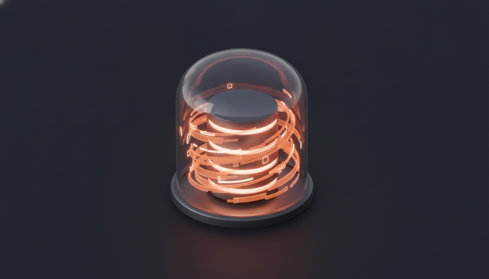
Każde wdrożenie karmi system danymi z realnej pracy (ruch, cykle, sytuacje graniczne). Im więcej robotów, tym mocniejsza przewaga.
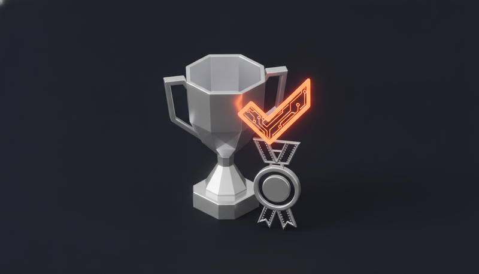
Nagroda EnRicH 2023 i wdrożenia u koncernów (BSH, NSK) — dowód działania potwierdzony przez trzecią stronę, nie przez nas samych.
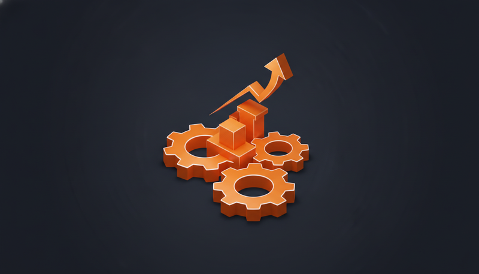
20 lat na shop floorze, 10 000+ dostarczonych systemów. Robimy to całe życie — tego nie nadgoni się kapitałem.
Algorytm 3D SLAM powstał w oparciu o nasze własne know-how i ponad 20-letnie doświadczenie w intralogistyce. Nawigację budujemy i rozwijamy własnymi siłami i przy własnym finansowaniu, z doświadczonym zespołem. Na pokładzie mamy naukowców najwyższej klasy — zarówno jako pracowników, jak i konsultantów na stałym etacie.
20 lat na rynku, klienci koncernowi. Od początku dostarczamy kompletny proces transportu surowca i wyrobu gotowego. Pół życia spędziliśmy na shop floorze — rozumiemy produkcję i magazyny jak nikt: intralogistyka, stanowiska pracy, regały przepływowe, wózki kitowe i sekwencyjne, dziesiątki warsztatów optymalizacji transportu.
Sprzedaż i relacje z klientami koncernowymi.
Doświadczeni konstruktorzy pojazdów i systemów.
Warstwa sterowników PLC — potężne doświadczenie.
Rozwój i budowa algorytmu 3D oraz samej nawigacji.
Konsultant naukowy — nadzór nad rozwojem nawigacji 3D, współpraca zakontraktowana na lata.
Dziś AGV to drogie komponenty przemysłowe: PLC Schneider Electric, moduły safety, styczniki, okablowanie. Zaprojektujemy jedną płytę główną — jak w robocie sprzątającym czy autonomicznej kosiarce — która zmieści całą elektronikę i nawigację.
EKONOMIA JEDNEGO AGV
Materiały to tylko ~15 tys. € — pozostałe ~10 tys. €/AGV pokrywa koszty stałe (przy 100 AGV = ~1 mln € na OpEx). Własna płyta i tania nawigacja podnoszą marżę powyżej 50%.
PRZYCHÓD · SPRZEDANE AGV / ROK
Backlog w toku: 6 AGV (BSH 2 · NSK 3 · Toyota pilot). Koszty wg benchmarków OEM automatyki — OpEx maleje z 35% do 26% przychodu (dźwignia operacyjna), EBITDA rośnie do ~24% przy 1 000 AGV.
| mln € / rok | 2027 | 2028 | 2029 | 2030 |
|---|---|---|---|---|
| Sprzedane AGV | 60 | 100 | 500 | 1 000 |
| Przychód | 3,0 | 5,0 | 25,0 | 50,0 |
| Koszt wytworzenia (COGS, 50%) | −1,5 | −2,5 | −12,5 | −25,0 |
| Marża brutto | 1,5 | 2,5 | 12,5 | 25,0 |
| Koszty operacyjne (OpEx: 35→26% przych.) | −1,05 | −1,6 | −7,0 | −13,0 |
| EBITDA (15→24%) | +0,45 | +0,9 | +5,5 | +12,0 |
1 000 AGV (2030) = <1% rocznych instalacji robotów transport&logistyka (IFR: 102 900 w 2024). To nie „1% wielkiego TAM" — to twardy bottom-up, malutki wycinek aktywnego rynku.
Marża brutto 50% i OpEx 35→26% przychodu wg benchmarków OEM automatyki (KION/Dematic, Daifuku, Teradyne). Liczby surowe — bez przychodu z wdrożeń i osprzętu (upside poza prognozą).
Rentowni od 2027 (EBITDA +0,45 mln €). 5 mln € = kapitał obrotowy (materiał przed zapłatą) + skalowanie 500→1000, nie pokrycie strat. Pełna skala → Series A ~2028–29.
NA CO IDĄ PIENIĄDZE
~24–30 miesięcy kapitału na skalowanie. Wycena (pre-money) — ustalimy z liderem rundy.
KAMIENIE MILOWE TEJ RUNDY
Certyfikacja ISO 3691-4 · własna płyta w produkcji (−7 000 €/AGV) · ~60 AGV wdrożonych · AI decyzyjne v1 · rentowność.
~100 AGV/rok · przychód ~5 mln € · EBITDA dodatnia (~18%) · kolejne zakłady · start RailShift (regały wysokiego składu).
Rentowni już od 2027. 5 mln € = kapitał obrotowy + skalowanie do ~100 AGV/rok. Skalę 500 → 1 000 AGV (25→50 mln €) w 2029–2030 finansujemy z przychodu i rundy Series A.
Lokalizację już rozwiązaliśmy. Nasz najnowszy wynalazek idzie dalej: towar płynie od dostawy do wysyłki bez ludzkich rąk. Odwracamy logikę magazynu — w centrum jest pojemnik, a regał, AGV i software pracują wokół niego.
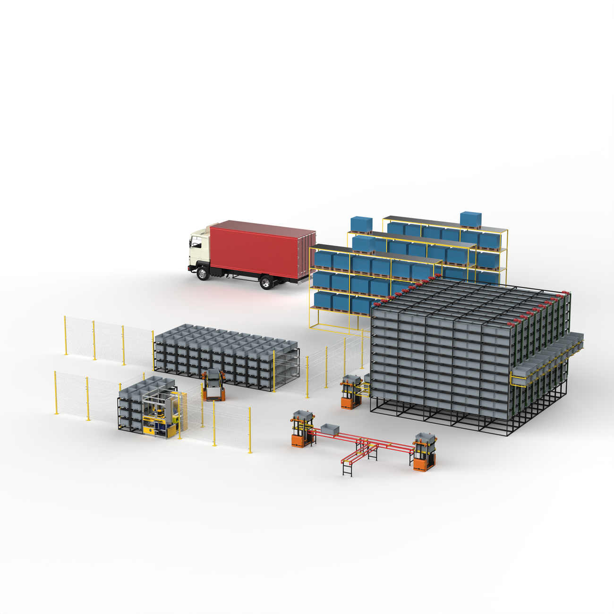
RailShift — kompletny przepływ od dostawy po wysyłkę
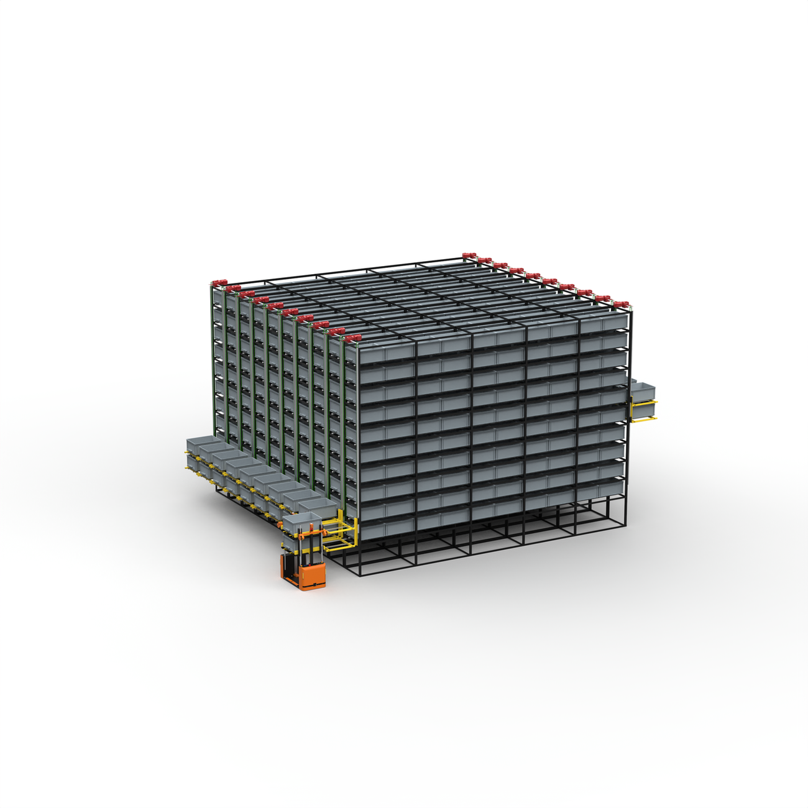
Potencjał rynkowy (McKinsey): −20…50% błędów prognozy · +7…15% pojemności bez CAPEX · −20…30% zapasów
Dołącz do rundy, która sprawi, że autonomiczne AGV staną się standardem — gotowe do pracy, łatwe w obsłudze, budowane przez zespół z 20-letnim doświadczeniem na shop floorze.
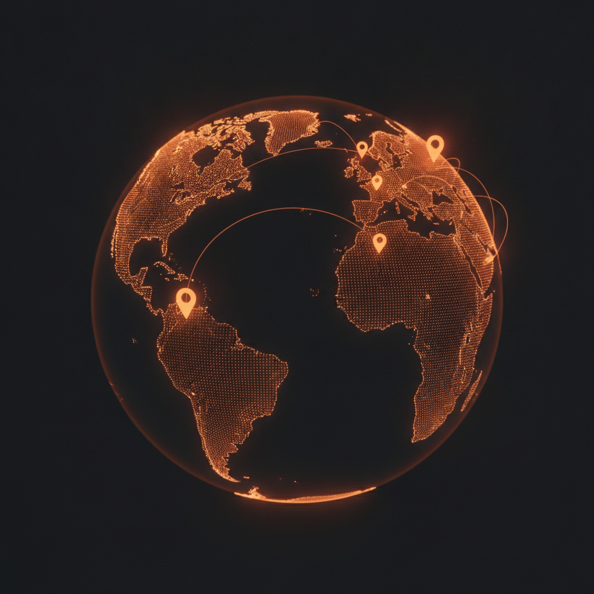